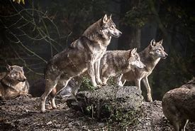
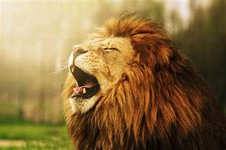
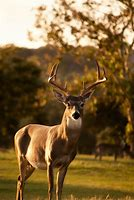
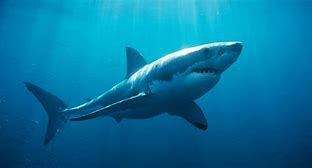
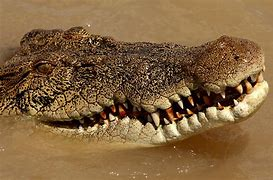
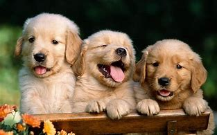

Wolves are very good hunters and they hunt in grups
Lions are also good hunters and they are the kings of the animals
Dears are not hunters they eat grass and they have horns to fight the hunter animals that are trining to hunt them
Sharks are under water hunters and have big and sharp teeth
Crocodiles are uder water and on land they are half awake while they sleep
Dogs are loal and they are peapoles brst friends,it makes you laugh and more
     